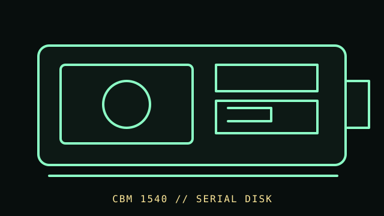

[ FLOPPY DRIVES // IDENTIFIED MODEL ]
Commodore 1540 Disk Drive
The Commodore 1540 is a single 5.25-inch disk drive designed for the VIC-20 generation of Commodore systems. Its serial-bus behavior and drive firmware are specific to this model and host generation.

MODEL IDENTIFICATION: Commodore 1540; record rear label, serial, PCB/ROM revision, and any conversion or 1541-related modification. This record keeps variant-dependent claims qualified; verify the physical unit and applicable manual before connecting, servicing, or formatting media.
Recorded specifications
| Catalog model | Commodore 1540 Disk Drive |
|---|---|
| Device type | External 5.25-inch drive with integrated controller |
| Interface / connector | Commodore serial IEC-style peripheral connection; host timing and firmware compatibility are model-specific. |
| Media / formats | 5.25-inch disks in Commodore DOS format. Disk geometry and usable organization depend on the 1540 controller and host software. |
| Revision caution | Match full model code, board/ROM/firmware revision, connector, cable, and documentation edition. Family-level ratings and host claims do not automatically apply to every unit. |
Host-controller and format compatibility
- Designed for VIC-20-era Commodore systems; compatibility with later Commodore hosts and 1541-targeted software depends on ROM, host timing, and any documented modifications.
- Do not connect to a PC floppy-controller cable. The 1540’s on-drive controller and serial host bus differ from bare internal floppy drives.
- 1540 and 1541 are related but distinct products. Preserve the exact model/board/ROM identity and do not transfer compatibility claims between them.
Preservation and safe cleaning
Unplug power and serial cable before service. Inspect media for mold, creasing, or coating loss and do not insert damaged disks. Follow the 1540 service literature for cleaning and adjustment; do not use solvents on disk surfaces or alter alignment casually.
For a disk acquisition, record the physical media label and condition, drive/model/revision, controller, host, software/firmware, settings, and any errors. Keep original media and raw captures/images unchanged; checksum verified copies and document conversions as derivatives.
Primary manuals & standards/archive references
- Commodore 1540 Users Manual — Zimmers.net archivePeriod user documentation for the 1540 drive.
- Commodore Disk Reference Manual — Zimmers.net archiveCommodore disk reference for DOS and drive commands; not a substitute for 1540 service instructions.
Source scope is stated per link. Prefer the matching manufacturer manual and revision over family summaries. Capacities and recording modes are omitted when not supported for the exact model and format.